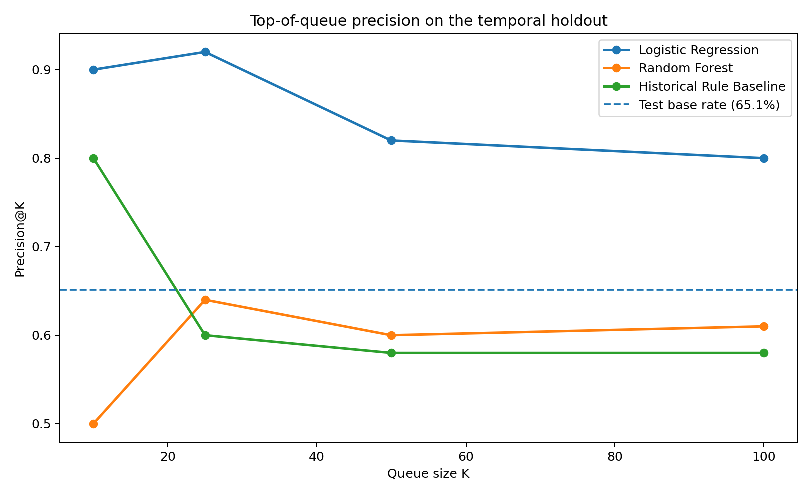
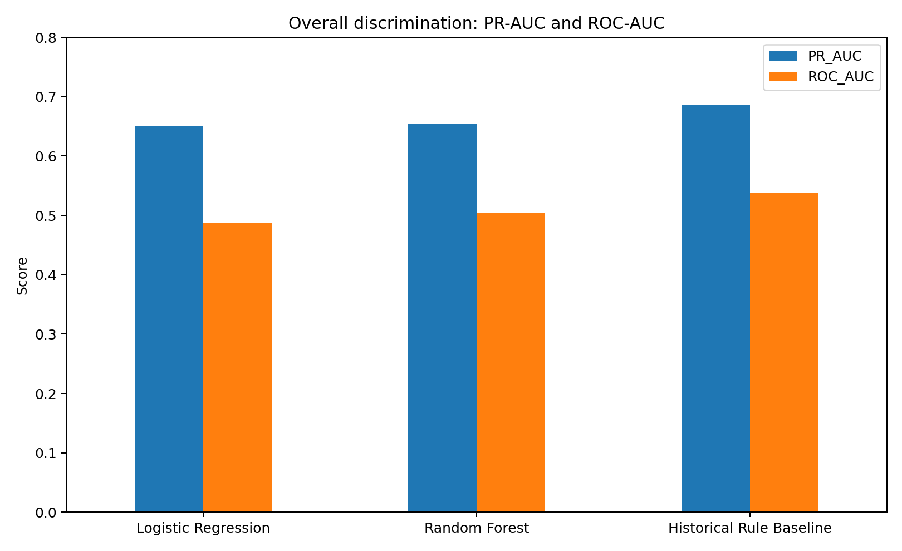
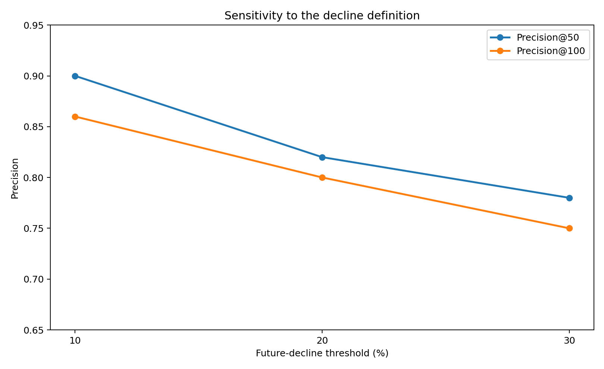
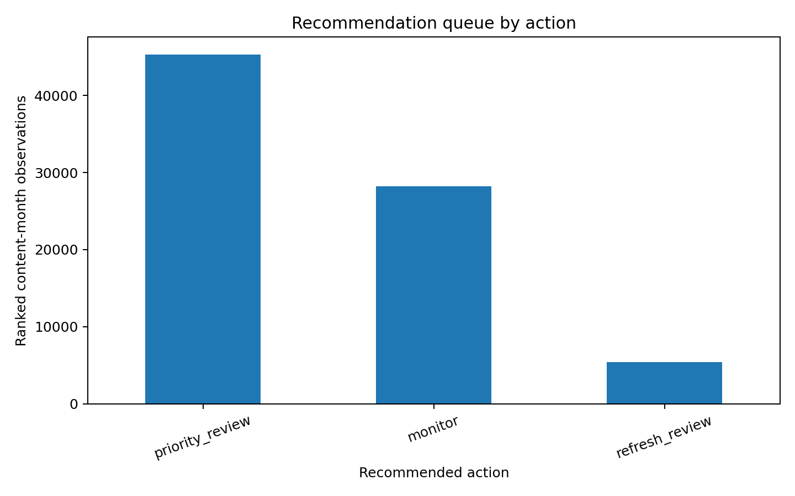

00Abstract
This study asks whether historical search‑performance signals available before a prediction date can rank content items that experience meaningful performance decline in the following month. The analysis uses the pseudonymized FlyRank full warehouse, with daily performance data aggregated into monthly content‑level observations over 18 monthly partitions from January 2025 through June 2026. Logistic Regression and Random Forest are compared with a transparent historical‑deterioration baseline using a chronological holdout, with Precision@50 as the primary ranking metric because the intended output is a limited editorial review queue. On the March–May 2026 test period, Logistic Regression achieved 92% Precision@25, 82% Precision@50, and 80% Precision@100 against a 65.1% test base rate, while its ROC‑AUC was 0.488 and the historical baseline had higher PR‑AUC. The output is therefore best treated as a decision‑support ranking for editorial investigation, not a generally accurate predictor or a causal explanation of search performance.
01Problem statement
The decision is which content items should receive editorial investigation first when review capacity is limited. The unit of analysis is one pseudonymized content item at a monthly prediction point. The output is a ranked risk score and review queue, with actions of refresh review, priority review, or monitor. False positives consume editorial review capacity; false negatives can leave genuinely declining content lower in the queue.
02Data
The analysis uses the FlyRank full pseudonymized internship warehouse, primarily fact_content_daily_performance. The run discovered 18 monthly Parquet partitions covering January 2025 through June 2026. The final temporal test period is March 2026 through May 2026.
The model uses historical impressions, clicks, position, CTR, active‑day measures, log‑scaled performance, and historical movement features. It excludes trend_direction, trend_pct, other target‑derived fields, and pseudonymous identifiers as predictive features. Pseudonymous identifiers are used only for grouping and anonymous queue construction. The query‑level 90‑day snapshot was excluded because its snapshot timing did not establish availability at every historical prediction point.
No client names, domains, URLs, private queries, credentials, or raw warehouse exports are published.
03Methodology
The target is future_decline = 1 when next‑month impressions are less than 80% of the immediately preceding month. Features are constructed from the previous three consecutive monthly observations. Earlier eligible observations form training data; the latest eligible prediction months form the chronological test period.
Models evaluated: Logistic Regression and Random Forest, against a transparent historical‑deterioration rule as baseline. Precision@50 is the predefined model‑selection metric, because the operational use case is a limited review queue.
04Results
| Model | ROC‑AUC | PR‑AUC | P@10 | P@25 | P@50 | P@100 |
|---|---|---|---|---|---|---|
| Logistic Regression | 0.488 | 0.650 | 0.90 | 0.92 | 0.82 | 0.80 |
| Random Forest | 0.505 | 0.655 | 0.50 | 0.64 | 0.60 | 0.61 |
| Historical Rule Baseline | 0.538 | 0.685 | 0.80 | 0.60 | 0.58 | 0.58 |
The selected ML model is Logistic Regression, chosen for the highest Precision@50 among the evaluated ML models — 0.82 versus 0.60 for Random Forest.

figures/precision_at_k.png — add this file alongside index.html to render the chart'">
figures/auc_comparison.png — add this file alongside index.html to render the chart'">Threshold sensitivity
| Decline threshold | Base rate | P@50 | P@100 |
|---|---|---|---|
| 10% | 70.3% | 0.90 | 0.86 |
| 20% | 65.1% | 0.82 | 0.80 |
| 30% | 59.2% | 0.78 | 0.75 |

figures/threshold_sensitivity.png — add this file alongside index.html to render the chart'">05Interpretation & limitations
The strongest supported interpretation is operational: historical signals can concentrate labelled future declines near the top of a limited editorial review queue. This does not establish that any feature causes decline, or that a refresh will improve performance.
The high Precision@K values must be read against the 65.1% base rate. The model's near‑random ROC‑AUC and the historical baseline's stronger overall PR‑AUC are important negative findings, not footnotes. The threshold analysis shows top‑of‑queue precision remains relatively high at 10%, 20%, and 30% decline definitions, but this does not establish generalisation beyond the evaluated period.
Error analysis was run in the notebook. The public paper should include exact false‑positive / false‑negative counts and representative rows only after they are verified from the final notebook output. No client‑identifying records are published here.
06Ranked recommendations
- 01Refresh reviewHighest‑risk observations with meaningful historical visibility.
- 02Priority reviewModerate‑ to high‑risk observations requiring manual investigation.
- 03MonitorLower‑risk observations without enough evidence for immediate intervention.
The recommendation queue is decision support. A high score does not guarantee that changing content will improve performance.

figures/recommendation_actions.png — add this file alongside index.html to render the chart'">07Reproducibility
Implementation: work/notebooks/capstone.ipynb. Random seed: 42.
- work/outputs/future_metrics.jsonrun receipt
- work/outputs/future_model_results.csvmodel vs. baseline
- work/outputs/future_threshold_sensitivity.csvthreshold sweep
- work/outputs/future_ranked_recommendations.csvranked queue
The full warehouse is accessed at runtime using a Hugging Face READ token. Raw warehouse data and credentials are not committed to the repository.
→ View the repository on GitHub
08Acknowledgments & data credit
Built on the FlyRank ML Internship dataset.